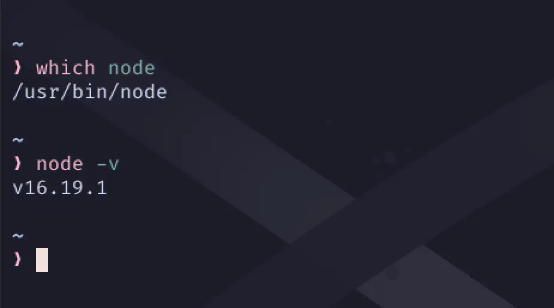
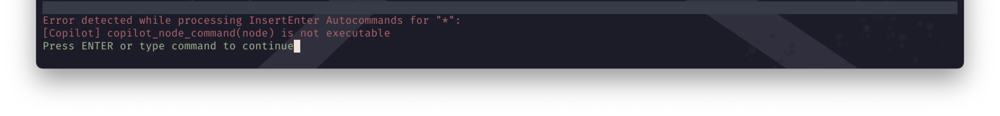
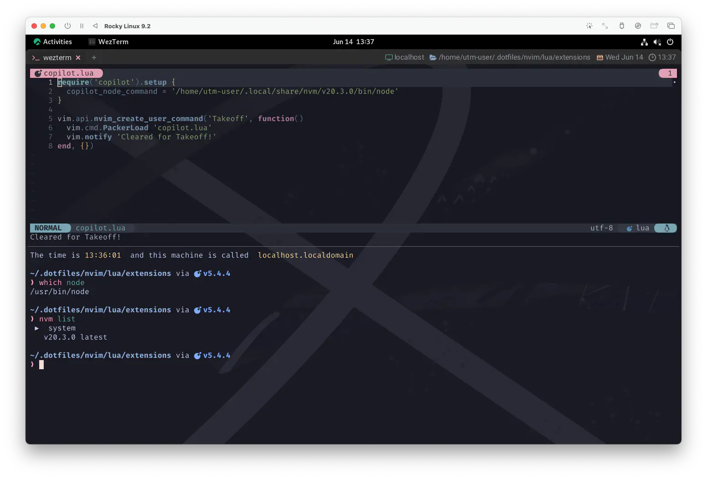

copilot.lua
ソロソロォ カエル ジカン デェス 😴🙏 1
このメドレーもフィナーレ目前ですが、ちょっとだけ未来に触れてみましょう。
...わたしも先週ぐらいに初めて触れたばっかりだけど😅
進歩は止まらない❗copilot.luaの登場です❗
This plugin is the pure lua replacement for github/copilot.vim.
このプラグインは、github/copilot.vim を純粋に lua で置き換えたものです。
Once there was a way to get back homeward
かつて 帰路につくための方法があった
GitHub Copilot
copilot.luaはGitHub CopilotとNeovimをつなぐ架け橋です。
GitHub Copilot uses the OpenAI Codex to suggest code and entire functions in real-time, right from your editor.
GitHub Copilot は、OpenAI Codex を使用して、エディタからリアルタイムでコードや機能全体を提案します。
Coca-Cola 2 が名を連ねているのがおもしろいですね😋
前項でも出ていましたが、GitHub が直々に提供しているcopilot.vimというプラグインもあります。
...ありますが、わたしはcopilot.luaにしました👩✈️
だってほら、こっちの方が親和性高そう💕
Motivation behind 'copilot.lua'
While using copilot.vim, for the first time since I started using neovim my laptop began to overheat. Additionally,
I found the large chunks of ghost text moving around my code, and interfering with my existing cmp ghost text disturbing.
As lua is far more efficient and makes things easier to integrate with modern plugins, this repository was created.
copilot.vimを使っているとき、neovimを使い始めてから初めて私のラップトップがオーバーヒートし始めました。 さらに、ゴーストテキストの大きな塊が私のコードの周りを動き回り、既存のcmpゴーストテキストと干渉していることに気づきました。 luaの方がはるかに効率的で、最新のプラグインとの統合が容易になるため、このレポジトリが作成されました。
Once there was a way to get back home
かつて 故郷に帰る方法があった
Install
Install the plugin with your preferred plugin manager. For example, with packer.nvim:
お好みのプラグインマネージャーでプラグインをインストールします。例えば、packer.nvimで：
ということで単純にインストールだけでもいいんですが...、
オフィシャルには、その先で示されているカスタマイズを含める方法がおすすめされています😉
Setup and Configuration
Because the copilot server takes some time to start up, it is recommend that you lazy load copilot. For example:
copilot サーバーは起動に時間がかかるため、copilot を遅延ロードすることをお勧めします。例えば、以下のような感じです：
use {
"zbirenbaum/copilot.lua",
cmd = "Copilot",
event = "InsertEnter",
config = function()
require("copilot").setup({})
end,
}
Packerの説明をサボってきたツケが全部ここにきちゃったぁ😱 というか、
ここまで機会が全くなかったのに、なんか急に機会まみれなんですけど🥹
Sleep pretty darling, do not cry
And i will sing a lullaby
最愛の君、泣かないで
子守唄を歌うよ さあ眠ろう
...まあ、要は
「(COMMANDから) :Copilot を実行する or INSERTに入る などとしたら起動してたもれ〜🪭」
というコンフィグです。
あと、この場合はOptional Loadの扱いになるので、プラグインはPacker管理下のoptディレクトリに配置されます。
Normal:
vim.fn.stdpath('data') .. '/site/pack/packer/start/copilot.lua',
Optional:
vim.fn.stdpath('data') .. '/site/pack/packer/opt/copilot.lua',
Other Plan...
:Copilotだと [Copilot] Not Started って出てくるのがなんか 「ん❓🙄」ってなりません❓
Insertモードで起動するって言うのも、結構無意識に入っちゃって「無駄に起動してしまったー❗」ってなりません❓
起動に時間のかかるcopilotサーバーのコントロールはもっと明示的な方がいいなーっていうのがわたしの感想でした🥸
なので、わたしはここに 2つのプランを提案します👩✈️
Using the PackerLoad command
まずはもっとシンプルに。
use {
'zbirenbaum/copilot.lua',
opt = true,
config = function()
require("copilot").setup({})
end,
}
optをtrueとすることで遅延ロードにして、packerの機能を使用して好きな時にロードします。
素直にpackerの能力に頼った使い方ですね。
PackerLoad packer-commands-load
Loads opt plugin immediately
optプラグインをすぐに読み込みます。
これだけでも、割といい感じなんじゃないかと思えるんですが、わたしが実際に使っているのは次の案です😉
Cleared for Takeoff, Good day!
この案では、extensions/copilot.luaを作成して記述します。
require('copilot').setup {}
vim.api.nvim_create_user_command('Takeoff', function()
vim.cmd.PackerLoad 'copilot.lua'
vim.notify 'Cleared for Takeoff!'
end, {})
use {
'zbirenbaum/copilot.lua',
cmd = 'Takeoff',
config = function() require 'extensions.copilot' end,
}
これも好きな時にロードできますが、notifyによるリアクションをしてくれます。
(リアクションが不要であれば、前項のプランの方が簡単です。)
notify({msg}, {level}, {opts}) vim.notify()
Display a notification to the user.
ユーザーへの通知を表示する。
This function can be overridden by plugins to display notifications using
a custom provider (such as the system notification provider). By default,
writes to |:messages|.
この関数は、カスタムプロバイダ (システム通知プロバイダなど) を使用して
通知を表示するプラグインによってオーバーライドすることができます。
デフォルトでは、|:messages| に書き込まれます。
Parameters:
• {msg} (string) Content of the notification to show to the user.
ユーザに表示する通知の内容です。
• {level} (integer|nil) One of the values from |vim.log.levels|.
|vim.log.levels| の値の1つです。
• {opts} (table|nil) Optional parameters. Unused by default.
オプションのパラメータです。デフォルトでは未使用です。
コマンドもTakeoffである必要はありません。雰囲気なくなるけど😮
なんせこれを思いついた時は、"まじGenius" なんじゃないかって思いました❗自分で🤣
...以上です、機長👩✈️
copilot_node_command
もう一個だけ、大事なものをやっちゃいましょう❗
Use this field to provide the path to a specific node version such as one installed by nvm. Node.js version must be 16.x or newer.
このフィールドは、nvm によってインストールされたものなど、特定の node バージョンへのパスを提供するために使用します。 Node.js のバージョンは 16.x 以降である必要があります。
copilot_node_command = vim.fn.expand("$HOME") .. "/.config/nvm/versions/node/v16.14.2/bin/node",
ちょっと環境によっては大変かもしれないんですが...。
- require('copilot').setup {}
+ require('copilot').setup {
+ copilot_node_command = 'node', -- node のパスを指定する
+ }
Node.js
試しにwhich nodeってやってみて、なんかそれっぽいパスが出てくるようなら大丈夫でしょう。
もし何も出てこないようならnode.jsをインストールしましょう❗
node.jsはもはや超メジャー選手なので、方法はなんぼでもありますからね😆
一応node -vもやってみて、16.x 以降だな〜ってなってればOKです❗...の、はずです。

バージョン16.x以降とは言うものの、2023-09-11 でもうEnd-of-lifeなので、18.xの方が良いはずです。
(上の例では思いっきり16.xなんですけどね😅)
なんなら 2023-10-24 からはLong-Term Support が 20.xに移るので、(支障なければ) もうこれ使う方がいいんじゃないかぐらい思ってます🐿️
| Release | Status | Codename | Initial Release | Active LTS Start | Maintenance Start | End-of-life |
|---|---|---|---|---|---|---|
| 16.x | Maintenance | Gallium | 2021-04-20 | 2021-10-26 | 2022-10-18 | 2023-09-11 |
| 18.x | LTS | Hydrogen | 2022-04-19 | 2022-10-25 | 2023-10-18 | 2025-04-30 |
| 20.x | Current | 2023-04-18 | 2023-10-24 | 2024-10-22 | 2026-04-30 |
(※ 2023-06-12 現在)
これもなぜかこのサイトで使っているFedora系の環境ではdnfからインストールしただけでは上手くいきませんでした😭
一応、16.x なんですけどね🥹 
なので困ってたんですけど...。
試しにnvmを使ってv20.3.0を入れて、そんでcopilot_node_commandで指定してみたら上手く飛んだんです😮

なんででしょ😅
To Be Continued...
ここもまた御多分に洩れず、まだ見た目にわかる変化は起きておりません❗
なんですが、ちょっと長くなってしまったので一旦区切ります😅
...区切りますが、ちょっと雑談してもいい❓
話が逸れるのか、もしくはど真ん中なのか、ちょうど今日こんな話題が巷に溢れてましたね😆
Paul McCartney says artificial intelligence has helped create “final” Beatles song
Paul McCartney、人工知能が "最後の" Beatles 楽曲制作に貢献したと語る
“It's kind of scary but exciting, because it's the future”
"一種の怖さはあるけどわくわくするね、なぜってこれが未来だから"
As reported by BBC, the Beatles bassist had received the demo from Lennon’s widow Yoko Ono in 1994. It was featured on a cassette that Lennon had made shortly before his death in 1980, and was titled ‘For Paul’.
BBC の報道によると McCartney は、1994年に オノ・ヨーコ からこのデモを受け取っていたという。 この曲は、Lennon が1980年に亡くなる直前に作ったカセットに収録されていたもので、 タイトルは 'For Paul' だった。
“It didn’t have a very good title, it needed a bit of reworking, but it had a beautiful verse and it had John singing it,” he told the publication."
"タイトルはあまり良くなかったし、少し手直しが必要だったが、美しい詩があって、John が歌っていた。
"We had John’s voice and a piano and he could separate them with AI. They tell the machine, ‘That’s the voice. This is a guitar. Lose the guitar’"
"John の声とピアノがあって、それをAIで分離することができたんだ。 機械に『これが声だ。これはギターだ。ギターをなくしてくれ』と。"
“So when we came to make what will be the last Beatles’ record, it was a demo that John had [and] we were able to take John’s voice and get it pure through this AI. Then we can mix the record, as you would normally do. So it gives you some sort of leeway.”
"だから、Beatles の最後のレコードになるものを作ることになったとき、 John が持っていたデモだったんだけど、このAIを通してジョンの声を取り出して純粋なものにすることができたんだ。 そして、通常と同じようにレコードをミックスすることができた。だから、ある種の自由度があるんだ。"
このページ、びっくりするぐらい難産で何日もかかってるんですが、なんかすっごい報われました😊
まるで事前に打ち合わせでもしていたかのよう❗
“We just finished it up and it’ll be released this year,” he added.
"ちょうど完成したところで、今年中にリリースされるよ" と彼は付け加えた。
1: 2013年、東京ドームで Paul が言ってたやつです。 前回の「カ キ マ シ タ ァ❗❗」も同じライブからの出典でした。わたしは1日目を観に行った人です😆
2: Abbey Road 収録の Come Together の詩に登場することでも有名🍹 偶然の出来事も、いつもは見過ごしてしまうあの瞬間も、61年連続増配はダテじゃない💰 関係ないんだけど Steve Jobs の "砂糖水をどうのこうの" は Pepsi でした。
3: Golden Slumbers (by The Beatles): McCartney が実父 Jim（James McCartney）の家でピアノを演奏しているときに、 義妹 Ruth のピアノ教本の中から Thomas Dekker の『Golden Slumbers』という子守唄を発見した。この時のことを McCartney は 「リヴァプールの父の家でピアノを弾いていた。譜面台にはピアノの練習をしていた妹の Ruth の教本がスタンドに立てかけてあって、 それをパラパラとめくっていったら、『Golden Slumbers』に行き当たったんだ。 僕は楽譜が読めないし、この古い曲に覚えがなかった。だから自分で旋律を作ったんだ」 「とにかく歌詞が気に入った。すごく安らげる、すごく美しい子守唄だと思ったからキープしておいたら、 手持ちの別の曲の断片とうまく合わさった」と語っている。Wikipediaより また、スコットランドでオノ・ヨーコと仲良くドライブ中🚗 飛び出してきた ねこちゃん🐈 を避けて派手に負傷した John Lennon は参加していないのが余計に泣けてくる。